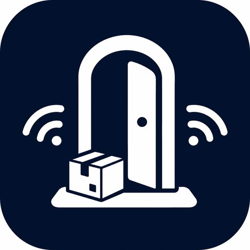

Send files between your phone and your computer —
with no internet, no cloud, and no account.
Three simple steps. You only pair your phone and computer once — after that, files arrive automatically.
Your phone and computer must be on the same network — home Wi-Fi, a hotspot, or a router cable.
Open Doorstep on your computer, then scan the code shown on screen with your phone. Choose Personal device to stay connected forever.
Copy a file into your Doorstep folder on the computer — it appears on your phone automatically. Send from your phone too.
Free forever. Pick the version for your device below — don't worry, we'll tell you which one.
Works on nearly every Android phone, including older and budget models.
Download for AndroidWorks on Windows 10 and Windows 11. No installation wizard — just unzip and run.
Download for WindowsDoorstep is not on the Google Play Store or the Microsoft Store yet, so your device may show a warning. That's normal — here's what to do.
When you tap the downloaded file, Android may say "Google Play Protect doesn't recognize this app" and try to block it.
If your phone asks for permission to install apps from your browser or file manager:
Yes. Doorstep is free and open source — anyone can read its code. Your files are sent directly between your own devices on your home network. Nothing is uploaded, no account is created, and no company can see your files.
Windows SmartScreen may say the app is unrecognized. That's because it isn't digitally signed by a store yet.
Still stuck? These should help.
Doorstep is brand new and free. Getting into app stores takes time and costs money, so for now you download it directly from this website. Once it's approved for the stores, we'll link them here.
No. Doorstep works entirely over your local Wi-Fi network. Your files never leave your home, and it even works when the internet is completely down (as long as both devices are on the same Wi-Fi).
Not yet. The iPhone version is coming in a future update. For now, Doorstep works on Android phones and Windows computers.
No. There are no accounts, no sign-ups, and no passwords. You pair your devices with a QR code and that's it.
No — both devices must be on the same network. If your home has two routers or a guest network, make sure both devices are on the same one. You can also turn on a Wi-Fi hotspot on your phone and connect the computer to it.
Doorstep is built on top of the free, open-source LocalSend project (Apache-2.0 license). It adds easy pairing, automatic reconnection, and "drop zones" so files just appear on your phone.
Open an issue on our GitHub page: github.com/javex-12/Doorstep/issues. You can also see the full source code there.